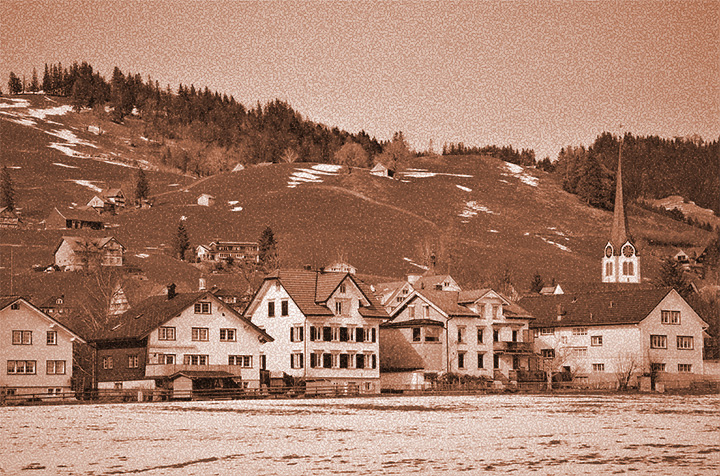

- Home
- My Inspiration
- Portfolio
- Get in Touch
- Newsletter
the News
Photo by pasja1000 from Pixabay

PATCHWORK VILLAGE NEWSLETTER
Portfolio Edition: A Year of Growth, Design, and Community
Welcome to Patchwork Village
Over the past year, Patchwork Village has evolved from an idea into a fully imagined community—one built on creativity, inclusivity, and intentional design. This newsletter serves as both a reflection and a portfolio, highlighting the strengths, vision, and development of the village as a cohesive project.
Our Vision
Patchwork Village was designed as a response to the need for more connected, equitable, and human-centered spaces. The concept embraces diversity—not just socially, but structurally—bringing together different styles, ideas, and purposes into one unified environment. Like a patchwork quilt, each piece is distinct, yet essential to the whole.
Key Features of the Village
1. Community-Centered Design
At the heart of Patchwork Village is its emphasis on community. Shared spaces such as gardens, gathering areas, and creative studios were intentionally designed to encourage interaction and collaboration. Every element promotes connection, from open layouts to multipurpose spaces.
2. Accessibility and Inclusivity
A major strength of the project is its commitment to accessibility. Pathways, housing, and public areas were planned with diverse physical and social needs in mind, ensuring that all residents feel welcome and supported.
3. Sustainable Living
Sustainability is woven into the foundation of Patchwork Village. Features such as local food systems, eco-friendly materials, and energy-conscious design choices reflect a long-term vision for environmental responsibility.
4. Creative Expression
Patchwork Village celebrates individuality. Each section of the village carries its own character, allowing for artistic expression while still contributing to the larger identity of the community. This balance between unity and uniqueness is one of the project’s defining strengths.
Process and Development
Throughout the year, this project has grown through brainstorming, revision, and reflection. Early ideas focused on general layout and purpose, while later stages refined details such as functionality, aesthetics, and social impact. This iterative process demonstrates adaptability and critical thinking—key skills showcased in this portfolio.
Looking Forward
Patchwork Village represents more than a single project—it reflects a way of thinking about communities and design. Moving forward, the ideas developed here could be expanded into real-world applications, further research, or future creative work.
Closing Thoughts
This portfolio piece highlights not just the final product, but the journey behind it. Patchwork Village stands as a testament to growth, imagination, and the power of bringing different ideas together to create something meaningful.